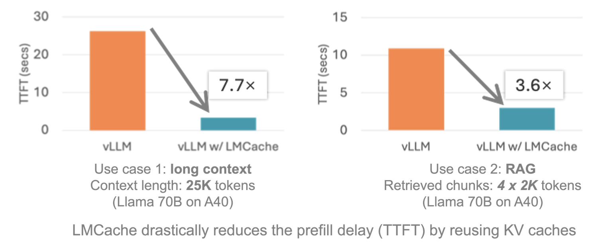

LMCache + SGLang Feature 해설¶
0x0. 머리말¶
전통적인 대형 모델 추론은 새 요청을 받을 때마다 KV Cache를 처음부터 계산해야 한다. 현재 요청이 다른 요청과 공통 prefix를 갖는 경우에는 그 prefix에 대해 이미 계산된 KV Cache를 재사용할 수 있지만, 그렇지 않으면 다시 계산해야 한다. 특히 긴 텍스트, 예를 들어 100K token 문서를 처리할 때 GPU memory와 compute resource 소모가 매우 크다. LMCache(https://github.com/LMCache/LMCache)의 핵심 돌파구는 KV Cache의 생성과 사용을 분리한 데 있다. 핵심 feature는 다음과 같다.
cross-level storage: 자주 쓰이는 KV Cache를 GPU memory → CPU memory → local disk의 3단계 storage에 cache하고, GPU memory가 부족하면 자동으로 아래 tier로 내린다. cross-request reuse: 같은 prefix만 재사용하는 전통적인 Prefix Caching과 달리, 임의 위치에서 반복되는 텍스트의 KV Cache도 추출해 재사용할 수 있다. distributed sharing: 여러 vLLM instance가 같은 cache pool을 공유해 중복 계산을 피한다. pinned memory + cuda kernel 기반 zero-copy transfer: cuda kernel 안에서 pinned memory를 직접 access해 copy한다. CUDA는 pinned memory에는 직접 access할 수 있지만 일반 CPU memory에는 직접 access할 수 없다.
32K context의 multi-turn conversation 시나리오에서 TTFT(first token latency)는 1.8초에서 0.4초로 내려갔고, GPU utilization은 40% 감소했다.

최근 LMCache도 SGLang을 지원하기 시작했다. SGLang 자체에도 이미 HiCache라는 비슷한 기능의 component가 있다. 또한 LMCache가 SGLang code를 수정한 부분은 SGLang repository에 merge되지는 않았다. 그래도 이 adaptation 방식을 이해하면 LMCache의 runtime flow와 SGLang의 KV Cache management를 더 깊이 이해할 수 있다. 그래서 이 글은 https://github.com/LMCache/LMCache/pull/869 의 end-to-end SGLang support PR과 https://github.com/Oasis-Git/sglang/tree/lmcache/benchmark/benchmark_lmcache 의 SGLang 개조 내용을 바탕으로, LMCache에서 새 inference framework를 어떻게 지원하고 위에서 언급한 cross-level storage, cross-request reuse, distributed sharing feature를 어떻게 얻게 하는지 빠르게 훑어본다. 현재 한 가지 제한은 LMCache가 adapt한 SGLang이 Layer-by-Layer KV Cache transfer를 지원하지 않고, 각 layer의 KV Cache를 하나의 tensor로 concat해 transfer한다는 점이다.
0x1. LMCache + SGLang 사용 방식¶
이 예시는 SGLang과 LMCache integration을 사용하는 방법을 보여준다.
설치¶
이 프로젝트는 SGLang repository의 pending pull request에 의존한다. 해당 PR이 merge되기 전에는 SGLang main branch가 아니라 특정 branch의 code를 사용해야 한다.
git clone https://github.com/Oasis-Git/sglang/tree/lmcache
cd sglang
pip install --upgrade pip
pip install -e "python[all]"
Server script¶
LMCache가 포함된 SGLang server를 실행하려면 다음을 실행한다.
export LMCACHE_USE_EXPERIMENTAL=True
export LMCACHE_CONFIG_FILE=lmcache_config.yaml
python -m sglang.launch_server --model-path Qwen/Qwen2.5-14B-Instruct --port 30000 --tp 2 --page-size 32 --enable-lmcache-connector
benchmark를 실행하려면 https://github.com/Oasis-Git/sglang/tree/lmcache/benchmark/benchmark_lmcache 를 참고한다.
그리고 lmcache_config.yaml 파일 내용은 다음과 같다.
# Basic configurations
chunk_size: 64
# CPU offloading configurations
local_cpu: true
max_local_cpu_size: 60.0
여기서 max_local_cpu_size는 local 최대 offload memory size를 제어하며 단위는 GB다. 여기서 말하는 memory는 pinned memory다. LMCache가 KV Cache transfer에 쓰는 것이 바로 pinned memory + cuda kernel 기반 zero-copy transfer이다. 즉 kernel에서 pinned memory를 직접 access해 copy한다. CUDA는 pinned memory에는 직접 access할 수 있지만 일반 CPU memory에는 직접 access할 수 없다.
다음 절에서 transfer CUDA kernel 구현을 분석할 때 get_kernel_ptr 함수가 나온다. 이 함수가 얻는 CPU memory는 반드시 pinned memory여야 한다.
template <typename T, typename TENSOR_TYPE>
T* get_kernel_ptr(TENSOR_TYPE& tensor) {
// Get the kernel-accessible pointer of the given type T
// Returns NULL if the tensor is on CPU and non-pinned
torch::Device device = tensor.device();
if (device.is_cuda()) {
return static_cast<T*>(tensor.data_ptr());
} else if (device.is_cpu() && tensor.is_pinned()) {
T* ptr;
cudaHostGetDevicePointer((void**)&ptr,
static_cast<void*>(tensor.data_ptr()), 0);
return ptr;
} else if (device.is_cpu()) {
// return NULL;
TORCH_CHECK(false, "Invalid device. Device must be cuda or pinned cpu.");
} else {
TORCH_CHECK(false, "Invalid device. Device must be cuda or pinned cpu.");
}
}
0x2. LMCache SGLangGPUConnector 구현¶
SGLangGPUConnector는 LMCache 안에서 SGLang의 CPU/GPU memory 사이 KV Cache data transfer를 관리하는 connector이며, LMCache의 GPUConnectorInterface class를 상속한다. 아래 code를 보면 SGLangGPUConnector는 multi-layer transformer의 key/value cache를 관리하고, slot mapping으로 prefix cache와 partial cache scenario를 처리하며, multi-GPU 환경을 지원한다. 핵심 장점은 memory copy overhead를 줄이고 asynchronous transfer와 intelligent synchronization mechanism을 지원해, large language model inference의 performance와 memory efficiency를 크게 높인다는 점이다.
class SGLangGPUConnector(GPUConnectorInterface):
"""
SGLang GPU connector for managing GPU KV Cache data transfer.
GPU KV Cache should be a list of tensors, one tensor per layer,
with independent key and value pointers. Concretely:
- kvcaches: Tuple[List[Tensor], List[Tensor]]
- first element is the list of key tensors, one tensor per layer
- second element is the list of value tensors, one tensor per layer
- each tensor shape: [page_buffer_size, head_num, head_size]
This connector uses pointer arrays for efficient access and manages
KV Cache data transfer between SGLang CPU/GPU memory and LMCache.
It produces/consumes memory objects in KV_2LTD format.
"""
def __init__(
self, hidden_dim_size: int, num_layers: int, use_gpu: bool = False, **kwargs
):
"""
Initialize the SGLang GPU connector.
Args:
hidden_dim_size: hidden dimension size
num_layers: number of model layers
use_gpu: whether to use a GPU buffer
**kwargs: additional arguments including chunk_size, device, dtype, etc.
"""
self.hidden_dim_size = hidden_dim_size
self.num_layers = num_layers
# Create key and value pointer arrays on CPU to store tensor pointers for each layer
self.key_pointers = torch.empty(num_layers, dtype=torch.int64, device="cpu")
self.value_pointers = torch.empty(num_layers, dtype=torch.int64, device="cpu")
# Dictionaries storing key/value pointers on GPU, organized by device index
self.key_pointers_on_gpu: dict[int, torch.Tensor] = {}
self.value_pointers_on_gpu: dict[int, torch.Tensor] = {}
self.page_buffer_size = 0
# GPU buffer for temporary data
self.gpu_buffer: Optional[torch.Tensor] = None
if use_gpu:
# chunk_size and device must be provided when using GPU
assert "chunk_size" in kwargs, (
"chunk_size should be provided to create a GPU buffer."
)
assert "device" in kwargs, (
"device should be provided to create a GPU buffer."
)
# Create GPU buffer according to chunk_size
shape = self.get_shape(kwargs["chunk_size"])
self.gpu_buffer = torch.empty(
shape, dtype=kwargs["dtype"], device=kwargs["device"]
)
logger.info(f"GPU buffer: {self.gpu_buffer.shape}")
def _initialize_pointers(self, kv_caches: List[torch.Tensor]) -> torch.Tensor:
"""
Initialize pointer arrays and copy the CPU pointers to GPU.
Args:
kv_caches: KV Cache list containing key and value tensors
Returns:
key and value pointer arrays on GPU
"""
k, v = kv_caches
# Store the memory addresses of each layer's key/value tensors into CPU pointer arrays
self.key_pointers.numpy()[:] = [t.data_ptr() for t in k]
self.value_pointers.numpy()[:] = [t.data_ptr() for t in v]
device = k[0].device
assert device.type == "cuda", "The device should be CUDA."
idx = device.index
# Create pointer arrays if this GPU device does not have them yet
if idx not in self.key_pointers_on_gpu:
self.key_pointers_on_gpu[idx] = torch.empty(
self.num_layers, dtype=torch.int64, device=device
)
if idx not in self.value_pointers_on_gpu:
self.value_pointers_on_gpu[idx] = torch.empty(
self.num_layers, dtype=torch.int64, device=device
)
# Copy CPU pointers to GPU
self.key_pointers_on_gpu[idx].copy_(self.key_pointers)
self.value_pointers_on_gpu[idx].copy_(self.value_pointers)
# Record page buffer size
self.page_buffer_size = k[0].shape[0]
return self.key_pointers_on_gpu[idx], self.value_pointers_on_gpu[idx]
@_lmcache_nvtx_annotate
def to_gpu(self, memory_obj: MemoryObj, start: int, end: int, **kwargs):
"""
Transfer data in the memory object to GPU.
Expects 'kvcaches' in kwargs, a nested tuple of K and V tensors.
kvcaches should correspond to the entire token sequence.
Notes:
1. This function expects 'slot_mapping' to be a partial slot mapping
whose length is the same as the uncached token sequence.
2. With prefix cache, slot_mapping starts with -1 until the matched
prefix ends. start and end should never overlap the prefix cache,
which means the underlying CUDA kernel should never see -1 in slot_mapping.
Args:
memory_obj: memory object to transfer
start: start position
end: end position
**kwargs: arguments such as kvcaches and slot_mapping
Raises:
ValueError: if 'kvcaches' or 'slot_mapping' is not provided
AssertionError: if the memory object has no tensor
"""
assert memory_obj.tensor is not None
# Check memory object format
if memory_obj.metadata.fmt != MemoryFormat.KV_2LTD:
raise ValueError(
"The memory object should be in KV_2LTD format in"
" order to be processed by VLLMPagedMemGPUConnector"
)
# Validate required arguments
if "kvcaches" not in kwargs:
raise ValueError("'kvcaches' should be provided in kwargs.")
if "slot_mapping" not in kwargs:
raise ValueError("'slot_mapping' should be provided in kwargs.")
offset = kwargs.get("offset", 0)
kvcaches: List[torch.Tensor] = kwargs["kvcaches"]
slot_mapping: torch.Tensor = kwargs["slot_mapping"]
# Initialize pointers and perform data transfer
key_pointers, value_pointers = self._initialize_pointers(kvcaches)
lmc_ops.multi_layer_kv_transfer_unilateral(
memory_obj.tensor,
key_pointers,
value_pointers,
slot_mapping[start - offset : end - offset],
kvcaches[0][0].device,
self.page_buffer_size,
False, # False means transfer from CPU to GPU
)
@_lmcache_nvtx_annotate
def from_gpu(self, memory_obj: MemoryObj, start: int, end: int, **kwargs):
"""
Transfer data from GPU to the memory object.
Expects 'kvcaches' in kwargs, a nested tuple of K and V tensors.
kvcaches should correspond to the entire token sequence.
This function sets memory_obj.metadata.fmt to MemoryFormat.KV_2LTD.
Notes:
1. This function expects 'slot_mapping' to be a partial slot mapping
whose length is the same as the uncached token sequence.
2. With prefix cache, slot_mapping starts with -1 until the matched
prefix ends. start and end should never overlap the prefix cache,
which means the underlying CUDA kernel should never see -1 in slot_mapping.
Args:
memory_obj: target memory object
start: start position
end: end position
**kwargs: arguments such as kvcaches and slot_mapping
Raises:
ValueError: if 'kvcaches' or 'slot_mapping' is not provided
AssertionError: if the memory object has no tensor
"""
assert memory_obj.tensor is not None
# Validate required arguments
if "kvcaches" not in kwargs:
raise ValueError("'kvcaches' should be provided in kwargs.")
if "slot_mapping" not in kwargs:
raise ValueError("'slot_mapping' should be provided in kwargs.")
kvcaches: List[torch.Tensor] = kwargs["kvcaches"]
slot_mapping: torch.Tensor = kwargs["slot_mapping"]
# Initialize pointers
key_pointers, value_pointers = self._initialize_pointers(kvcaches)
# Select transfer strategy based on whether a GPU buffer exists
if self.gpu_buffer is None or end - start != self.gpu_buffer.shape[2]:
# Direct transfer: GPU -> memory object
lmc_ops.multi_layer_kv_transfer_unilateral(
memory_obj.tensor,
key_pointers,
value_pointers,
slot_mapping[start:end],
kvcaches[0][0].device,
self.page_buffer_size,
True, # True means transfer from GPU to CPU
)
else:
# Use GPU buffer as intermediate storage: kvcaches -> gpu_buffer -> memobj
assert self.gpu_buffer.device == kvcaches[0][0].device
tmp_gpu_buffer = self.gpu_buffer[:, :, : end - start, :]
lmc_ops.multi_layer_kv_transfer_unilateral(
tmp_gpu_buffer,
key_pointers,
value_pointers,
slot_mapping[start:end],
kvcaches[0][0].device,
self.page_buffer_size,
True,
)
# Copy GPU buffer data into the memory object
memory_obj.tensor.copy_(tmp_gpu_buffer, non_blocking=True)
# Force synchronization if the destination buffer is not a CUDA device
if not memory_obj.tensor.is_cuda:
# Note: for better performance, we may not want to synchronize every memory object
torch.cuda.synchronize()
def get_shape(self, num_tokens: int) -> torch.Size:
"""
Get tensor shape for the specified number of tokens.
Args:
num_tokens: number of tokens
Returns:
tensor shape: [2, num_layers, num_tokens, hidden_dim_size]
"""
return torch.Size([2, self.num_layers, num_tokens, self.hidden_dim_size])
# TODO(Yuwei): need to optimize to enable real batching
def batched_from_gpu(self, memory_objs, starts, ends, **kwargs):
"""
Batch-transfer data from GPU to multiple memory objects.
Note: the current implementation is serial and needs optimization for real batching.
Args:
memory_objs: list of memory objects
starts: list of start positions
ends: list of end positions
**kwargs: other arguments
"""
for memory_obj, start, end in zip(memory_objs, starts, ends, strict=False):
self.from_gpu(memory_obj, start, end, **kwargs)
여기서 memory_obj object의 출처는 다음과 같다.
kv_shape = self.gpu_connector.get_shape(num_tokens)
kv_dtype = self.metadata.kv_dtype
# TODO (Jiayi): should be batched in the future
memory_obj = self.storage_manager.allocate(kv_shape, kv_dtype)
위 get_shape 함수가 반환하는 shape는 return torch.Size([2, self.num_layers, num_tokens, self.hidden_dim_size])다. 이것도 token 하나의 계산을 끝낸 뒤 전체를 transfer한다는 점을 보여준다.
이 connector 안의 핵심 kernel은 lmc_ops.multi_layer_kv_transfer_unilateral이다. 아래에서 이 kernel 구현을 분석한다.
/* Compute the linear offset of the KV Cache tensor in LMCache.
* k_or_v: 0 means key, 1 means value
* layer_idx: layer index
* token_idx: token index
* scalar_offset: scalar offset inside one token
* scalars_per_token: number of scalars per token
* num_tokens: total number of tokens
* num_layers: number of model layers
*/
__device__ __forceinline__ int64_t
key_value_offset(const int k_or_v, const int layer_idx, const int token_idx,
const int scalar_offset, const int scalars_per_token,
const int num_tokens, const int num_layers) {
return k_or_v * num_layers * num_tokens * scalars_per_token +
layer_idx * num_tokens * scalars_per_token +
token_idx * scalars_per_token + scalar_offset;
}
/* Compute the linear offset inside the paged buffer.
* token_idx: token index in the sequence
* scalar_offset: scalar offset inside one token
* scalars_per_token: number of scalars per token
*/
__device__ __forceinline__ int64_t page_buffer_offset_unilateral(
const int token_idx, const int scalar_offset, const int scalars_per_token) {
return token_idx * scalars_per_token + scalar_offset; // Linear address calculation
}
/* Multi-layer KV Cache transfer kernel.
* Template parameters:
* scalar_t: data type template
* DIRECTION: transfer direction (true: paged buffer -> LMCache, false: LMCache -> paged buffer)
* Arguments:
* key_value: LMCache KV Cache tensor [2, num_layers, num_tokens, scalars_per_token]
* key_ptrs/value_ptrs: pointer arrays for each layer's key/value
* slot_mapping: slot mapping from tokens to paged buffer
* scalars_per_token: number of scalar elements per token
* num_tokens: total number of tokens
* num_layers: number of model layers
* page_buffer_size: paged buffer size
*/
template <typename scalar_t, bool DIRECTION>
__global__ void load_and_reshape_multi_layer_kernel_unilateral(
scalar_t* __restrict__ key_value, // LMCache KV Cache tensor
scalar_t** __restrict__ key_ptrs, // key pointer array for each layer
scalar_t** __restrict__ value_ptrs, // value pointer array for each layer
const int64_t* __restrict__ slot_mapping, // slot mapping table
const int scalars_per_token, const int num_tokens, const int num_layers,
const int page_buffer_size) {
// Get dimension information processed by the current thread
const int token_id = blockIdx.x; // Which token to process
const int layer_id = blockIdx.y; // Which layer to process
const int k_or_v = blockIdx.z; // 0: process key, 1: process value
const int tid = threadIdx.x; // Thread ID
const int num_threads = blockDim.x;// Total number of threads
// Get the paged-buffer slot for the current token
const int64_t slot_idx = slot_mapping[token_id];
int64_t* key_ptr = key_ptrs[layer_id]; // key pointer of the current layer
int64_t* value_ptr = value_ptrs[layer_id]; // value pointer of the current layer
if (slot_idx < 0) { // Invalid slot returns directly
return;
}
// Parallel data copy: each thread processes part of the elements in one token
for (int i = tid; i < scalars_per_token; i += num_threads) {
// Compute target offset in LMCache
const int64_t lmcache_offset = key_value_offset(
k_or_v, layer_id, token_id, i, scalars_per_token, num_tokens, num_layers);
// Compute source offset in the paged buffer
const int64_t sgl_offset = page_buffer_offset_unilateral(
slot_idx, i, scalars_per_token);
// Copy data according to key/value type and direction
if (k_or_v == 0) { // Process key
if (DIRECTION) // paged buffer -> LMCache
key_value[lmcache_offset] = key_ptr[sgl_offset];
else // LMCache -> paged buffer
key_ptr[sgl_offset] = key_value[lmcache_offset];
} else { // Process value
if (DIRECTION) // paged buffer -> LMCache
key_value[lmcache_offset] = value_ptr[sgl_offset];
else // LMCache -> paged buffer
value_ptr[sgl_offset] = key_value[lmcache_offset];
}
}
}
/* Multi-layer KV Cache transfer entry function.
* Arguments:
* key_value: target cache tensor [2, num_layers, num_tokens, elements]
* key_ptrs/value_ptrs: tensors containing key/value pointers for each layer
* slot_mapping: slot mapping tensor [num_tokens]
* paged_memory_device: device where paged memory is located
* page_buffer_size: paged buffer size
* direction: transfer direction (true: paged buffer -> LMCache)
*/
void multi_layer_kv_transfer_unilateral(
torch::Tensor& key_value, // Target cache tensor
const torch::Tensor& key_ptrs, // key pointer array
const torch::Tensor& value_ptrs, // value pointer array
const torch::Tensor& slot_mapping, // slot mapping
const torch::Device& paged_memory_device, // paged memory device
const int page_buffer_size, // paged buffer size
const bool direction) { // transfer direction
// Get the underlying pointers for each tensor
int64_t* key_value_ptr = get_kernel_ptr<int64_t, torch::Tensor>(key_value);
int64_t** key_ptrs_ptr = get_kernel_ptr<int64_t*, const torch::Tensor>(key_ptrs);
int64_t** value_ptrs_ptr = get_kernel_ptr<int64_t*, const torch::Tensor>(value_ptrs);
const int64_t* slot_mapping_ptr = get_kernel_ptr<const int64_t, const torch::Tensor>(slot_mapping);
// Compute kernel parameters
int num_layers = key_value.size(1); // Number of model layers
int num_tokens = slot_mapping.size(0); // Total number of tokens
int num_origin_elements = key_value.size(3); // Number of elements per token
int elements_per_qword = 8 / key_value.element_size(); // Elements per qword
int num_qwords = num_origin_elements / elements_per_qword; // Number of qwords to process
int k_or_v_size = 2; // Process both key and value
// Set CUDA kernel execution configuration
dim3 grid(key_value.size(2), key_value.size(1), k_or_v_size); // Three-dimensional grid
dim3 block(std::min(num_qwords, 128)); // Up to 128 threads per block
// Set device context and CUDA stream
const at::cuda::OptionalCUDAGuard device_guard(paged_memory_device);
const cudaStream_t stream = at::cuda::getCurrentCUDAStream();
// Select kernel template according to transfer direction
if (not direction) { // LMCache -> paged buffer
lmc::load_and_reshape_multi_layer_kernel_unilateral<int64_t, false>
<<<grid, block, 0, stream>>>(
key_value_ptr, key_ptrs_ptr, value_ptrs_ptr, slot_mapping_ptr,
num_qwords, num_tokens, num_layers, page_buffer_size);
C10_CUDA_KERNEL_LAUNCH_CHECK(); // Check kernel launch status
} else { // paged buffer -> LMCache
lmc::load_and_reshape_multi_layer_kernel_unilateral<int64_t, true>
<<<grid, block, 0, stream>>>(
key_value_ptr, key_ptrs_ptr, value_ptrs_ptr, slot_mapping_ptr,
num_qwords, num_tokens, num_layers, page_buffer_size);
C10_CUDA_KERNEL_LAUNCH_CHECK();
}
}
void multi_layer_kv_transfer_unilateral(
torch::Tensor& key_value, const torch::Tensor& key_ptrs,
const torch::Tensor& value_ptrs, const torch::Tensor& slot_mapping,
const torch::Device& paged_memory_device, const int page_buffer_size,
const bool direction);
0x3. SGLangGPUConnector wrapper¶
이 SGLangGPUConnector connector가 생긴 뒤에는 https://github.com/LMCache/LMCache/blob/dev/lmcache/integration/sglang/sglang_adapter.py 안에서 한 단계 더 높은 LMCacheConnector class로 감싸야 한다. 이 class에는 두 가지 핵심 API가 있다.
load_kv: LMCache cache에서 저장된 KV Cache를 retrieve해 SGLang의 GPU memory slot에 load하며, prefix token loading skip을 지원한다.store_kv: SGLang이 계산한 KV Cache를 LMCache cache에 저장해 후속 request에서 재사용하게 한다.
또한 이 class는 model config, distributed 관련 rank, world_size, 그리고 KV Cache pool reference 같은 다른 핵심 정보도 보관한다.
추가로 init_lmcache_engine 함수로 LMCache cache engine을 생성하고, KV Cache shape parameter(layer 수, head 수, head dimension 등)를 configure하며, SGLangGPUConnector instance를 만들어 GPU memory와 cache 사이 data transfer를 처리해야 한다.
# Standard
from typing import List, Optional
# Third Party
from sglang.srt.configs.model_config import ModelConfig
import torch
# First Party
from lmcache.config import LMCacheEngineMetadata
from lmcache.integration.sglang.utils import ENGINE_NAME, lmcache_get_config
from lmcache.logging import init_logger
from lmcache.v1.cache_engine import LMCacheEngine, LMCacheEngineBuilder
from lmcache.v1.config import LMCacheEngineConfig
from lmcache.v1.gpu_connector import (
SGLangGPUConnector,
)
logger = init_logger(__name__)
def get_kv_cache_torch_dtype(dtype: str) -> torch.dtype:
"""Get the torch dtype used by KV Cache. Currently only bfloat16 is supported."""
# TODO: add support for other dtypes
return torch.bfloat16
def need_gpu_interm_buffer(lmcache_config: LMCacheEngineConfig):
"""Decide whether a GPU intermediate buffer is needed. It is needed when NIXL optimization is not enabled."""
if lmcache_config.enable_nixl:
return False # Direct transfer when NIXL optimization is enabled; no intermediate buffer needed
else:
return True # Intermediate buffer is needed by default
def init_lmcache_engine(
model_config: ModelConfig,
tp_size: int,
rank: int,
world_size: int,
) -> Optional[LMCacheEngine]:
"""
Initialize the LMCache engine.
Args:
model_config: model configuration
tp_size: tensor parallel size
rank: GPU rank of the current process
world_size: total number of GPUs
Returns:
LMCacheEngine instance, or None if it already exists
"""
# Check whether an engine instance already exists
if LMCacheEngineBuilder.get(ENGINE_NAME) is not None:
return None
# Get LMCache configuration
config = lmcache_get_config()
assert isinstance(config, LMCacheEngineConfig), "LMCache v1 config parameters are required"
# Build KV Cache shape parameters for memory pool allocation
kv_dtype = get_kv_cache_torch_dtype(model_config.dtype)
num_layer = model_config.num_hidden_layers # Number of model layers
chunk_size = config.chunk_size # Cache chunk size
num_kv_head = model_config.get_num_kv_heads(tp_size) # Number of KV heads
head_dim = model_config.head_dim # Attention head dimension
kv_shape = (num_layer, 2, chunk_size, num_kv_head, head_dim) # Shape: [layers, K/V, chunk size, heads, head dim]
# Set current CUDA device
torch.cuda.device(rank)
device = torch.device(f"cuda:{rank}")
# Build engine metadata
metadata = LMCacheEngineMetadata(
model_config.model_path, # Model path
world_size, # Total number of GPUs
rank, # Current GPU rank
"sgl", # Backend identifier (sglang)
kv_dtype, # KV dtype
kv_shape, # KV Cache shape
)
# Create GPU connector
use_gpu = need_gpu_interm_buffer(config)
hidden_dim_size = num_kv_head * head_dim # Hidden dimension = heads * head dimension
if config.use_layerwise:
raise ValueError("Layerwise connector is not supported yet")
else:
# Create SGLang GPU connector instance
sglang_gpu_connector = SGLangGPUConnector(
hidden_dim_size,
num_layer,
use_gpu=use_gpu,
chunk_size=chunk_size,
dtype=kv_dtype,
device=device,
)
# Create/get cache engine instance
engine = LMCacheEngineBuilder.get_or_create(
ENGINE_NAME, config, metadata, sglang_gpu_connector
)
return engine
class LMCacheConnector:
"""Adapter class between LMCache and SGLang. It manages KV Cache loading/storage."""
def __init__(
self,
sgl_config: ModelConfig,
tp_size: int,
rank: int,
world_size: int,
k_pool: List[torch.Tensor], # Key cache pool
v_pool: List[torch.Tensor], # Value cache pool
):
"""Initialize connector and create LMCache engine instance."""
self.lmcache_engine = init_lmcache_engine(
sgl_config,
tp_size,
rank,
world_size,
)
# Save configuration information
self.sgl_config = sgl_config
self.tp_size = tp_size # Tensor parallel size
self.rank = rank # Current GPU rank
self.world_size = world_size # Total number of GPUs
self.k_pool = k_pool # Reference to key cache pool
self.v_pool = v_pool # Reference to value cache pool
####################
# Worker side APIs
####################
def load_kv(
self, token_ids: torch.Tensor, slot_mapping: torch.Tensor, offset: int = 0
) -> None:
"""Load KV from cache into specified slots.
Args:
token_ids: input token ID sequence
slot_mapping: mapping from token to cache slot
offset: number of starting tokens to skip
Returns:
number of tokens actually loaded
"""
# Validate arguments
assert isinstance(token_ids, torch.Tensor)
assert isinstance(slot_mapping, torch.Tensor)
assert (len(token_ids) - offset) == len(slot_mapping)
# Move slot mapping to GPU
slot_mapping = slot_mapping.cuda()
# Create load mask, skipping tokens before offset
load_mask = torch.ones_like(token_ids, dtype=torch.bool)
load_mask[:offset] = False
# Call engine retrieve API
ret_token_mask = self.lmcache_engine.retrieve(
token_ids,
mask=load_mask,
kvcaches=[self.k_pool, self.v_pool], # Pass in KV Cache pool
slot_mapping=slot_mapping,
offset=offset,
)
return ret_token_mask.sum().item() # Return number of tokens actually loaded
def store_kv(
self, token_ids: torch.Tensor, slot_mapping: torch.Tensor, offset: int = 0
) -> None:
"""Store KV into specified cache slots.
Args:
token_ids: input token ID sequence
slot_mapping: mapping from token to cache slot
offset: number of starting tokens to skip
"""
# Validate arguments
assert isinstance(token_ids, torch.Tensor)
assert isinstance(slot_mapping, torch.Tensor)
assert len(token_ids) == len(slot_mapping)
# Move slot mapping to GPU
slot_mapping = slot_mapping.cuda()
# Create all-True store mask
store_mask = torch.ones_like(token_ids, dtype=torch.bool)
# Call engine store API
self.lmcache_engine.store(
token_ids,
mask=store_mask,
kvcaches=[self.k_pool, self.v_pool], # Pass in KV Cache pool
slot_mapping=slot_mapping,
offset=offset,
)
def chunk_size(self):
"""Get cache chunk size of the current configuration."""
return self.lmcache_engine.config.chunk_size
def reset(self):
"""Reset cache engine."""
self.lmcache_engine.clear()
def close(self):
"""Close cache engine."""
self.lmcache_engine.close()
개인적으로는 여기 이름을 SGLangLMCacheConnector라고 부르는 편이 더 적절해 보인다.
0x4. SGLang에서 wrapper된 LMCacheConnector 사용하기¶
SGLang은 RadixCache 구현 안에서 LMCacheConnector와의 integration을 마무리한다. code 위치는 다음과 같다.
https://github.com/Oasis-Git/sglang/blob/lmcache/python/sglang/srt/mem_cache/radix_cache.py#L102-L461
RadixCache와 SGLang KV Cache code 분석은 https://github.com/zhaochenyang20/Awesome-ML-SYS-Tutorial/blob/main/sglang/kvcache-code-walk-through/readme-CN.md 를 보면 된다. 먼저 이 문서를 읽어 보는 것을 권한다.
136-147행에서 initialization 수행
if self.token_to_kv_pool_allocator is not None and enable_lmcache_connector:
self.lmcache_connector = LMCacheConnector(
sgl_config=model_config,
tp_size=tp_size,
rank=rank,
world_size=world_size,
k_pool=self.token_to_kv_pool_allocator._kvcache.k_buffer,
v_pool=self.token_to_kv_pool_allocator._kvcache.v_buffer,
)
# Create asynchronous write queue and thread
self.writer_queue = queue.Queue()
self.shutdown_event = threading.Event()
self.writer_thread = threading.Thread(target=self._lmcache_writer_worker)
self.writer_thread.start()
- LMCacheConnector instance를 만들고 underlying KV cache pool에 연결한다.
- 독립 write thread를 시작해 main thread blocking을 피한다.
- GPU memory pool reference를 LMCache에 전달한다.
match_prefix의 핵심 logic(187-254행)
- 사전 검사와 준비
if self.lmcache_connector_enabled():
# Check whether the prefix is page-aligned
if len(value) % self.page_size != 0:
raise ValueError("The prefix is not page-aligned")
uncached_paged_aligned_len = len(key) - len(value)
chunk_size = self.lmcache_connector.chunk_size()
- full hit 처리. RadixCache가 이미 필요한 모든 tokens를 포함하면 바로 반환한다.
if uncached_paged_aligned_len == 0:
return MatchResult(
device_indices=value,
last_device_node=last_node,
last_host_node=last_node,
)
- prefix padding 계산. LMCache는 chunk alignment를 사용하므로 padding length를 계산해야 한다.
if len(value) % chunk_size != 0:
prefix_padding_len = len(value) % chunk_size
else:
prefix_padding_len = 0
- slot mapping 구성. prefix padding 부분은 -1로 표시해 저장이 필요 없음을 나타내고, 뒤쪽은 실제 할당된 memory index다.
slot_mapping = torch.cat([
torch.tensor([-1] * prefix_padding_len, dtype=torch.int64, device=self.device),
token_prealloc_indices.detach().clone().to(torch.int64).to(self.device)
])
- LMCache에서 data를 load한다.
num_retrieved_tokens = self.lmcache_connector.load_kv(
key_tokens,
slot_mapping,
offset=len(value) - prefix_padding_len,
)
- load 결과 처리
if num_retrieved_tokens > 0:
# Free unused memory
self.token_to_kv_pool_allocator.free(
token_prealloc_indices[(num_retrieved_tokens - prefix_padding_len):]
)
# Create a new tree node
new_node = TreeNode()
new_node.key = key[len(value):len(value) + (num_retrieved_tokens - prefix_padding_len)]
new_node.value = token_prealloc_indices[:num_retrieved_tokens - prefix_padding_len]
new_node.parent = last_node
last_node.children[self.get_child_key_fn(...)] = new_node
# Update cache state
last_node = new_node
value = torch.cat([value, token_prealloc_indices[:num_retrieved_tokens - prefix_padding_len]])
self.evictable_size_ += (num_retrieved_tokens - prefix_padding_len)
else:
# No data retrieved; free all preallocated memory
self.token_to_kv_pool_allocator.free(token_prealloc_indices)
asynchronous storage logic(311-319행)
cache_finished_req method 안에서:
if self.lmcache_connector_enabled():
kv_indices_storage, last_node, _, _ = self.match_prefix(token_ids[:page_aligned_len])
if len(kv_indices_storage) != len(token_ids[:page_aligned_len]):
raise ValueError("The KV cache is not page-aligned")
self.inc_lock_ref(last_node) # Increase reference count to prevent eviction
self.writer_queue.put((token_ids[:page_aligned_len], kv_indices_storage, last_node))
asynchronous write thread(420-444행)
def _lmcache_writer_worker(self):
while not self.shutdown_event.is_set():
try:
item = self.writer_queue.get(timeout=1)
if item is None:
break
token_ids, kv_indices_to_store, last_node = item
try:
self.lmcache_connector.store_kv(
torch.tensor(token_ids, device=self.device),
kv_indices_to_store.detach().clone().to(torch.int64).to(self.device),
)
finally:
self.dec_lock_ref(last_node) # Release reference count
self.writer_queue.task_done()
except queue.Empty:
continue
except Exception as e:
logger.error(f"Error in LMCache writer thread: {e}", exc_info=True)
0x5. 정리¶
LMCache는 KV Cache의 생성과 사용을 분리해 cross-level storage, cross-request reuse, distributed sharing 같은 핵심 기능을 구현한다. SGLang과의 integration은 주로 SGLangGPUConnector connector로 이루어진다. 이 connector는 pinned memory 기반 zero-copy transfer 기술과 CUDA kernel을 활용해 GPU memory와 CPU memory 사이에서 multi-layer KV Cache data를 효율적으로 transfer한다. SGLang의 RadixCache에서는 LMCacheConnector wrapper class가 load_kv와 store_kv interface를 제공하고, asynchronous write mechanism과 결합해 long-context/RAG 같은 scenario의 inference performance를 크게 높일 수 있다.